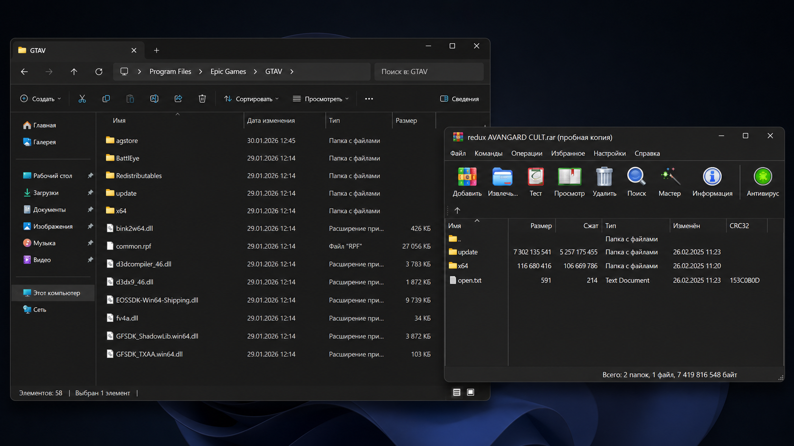
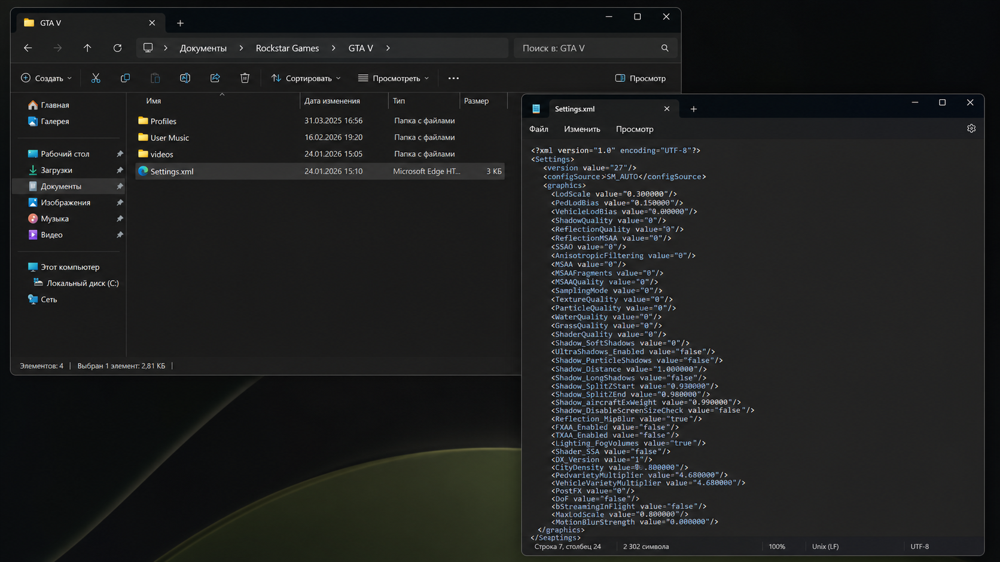
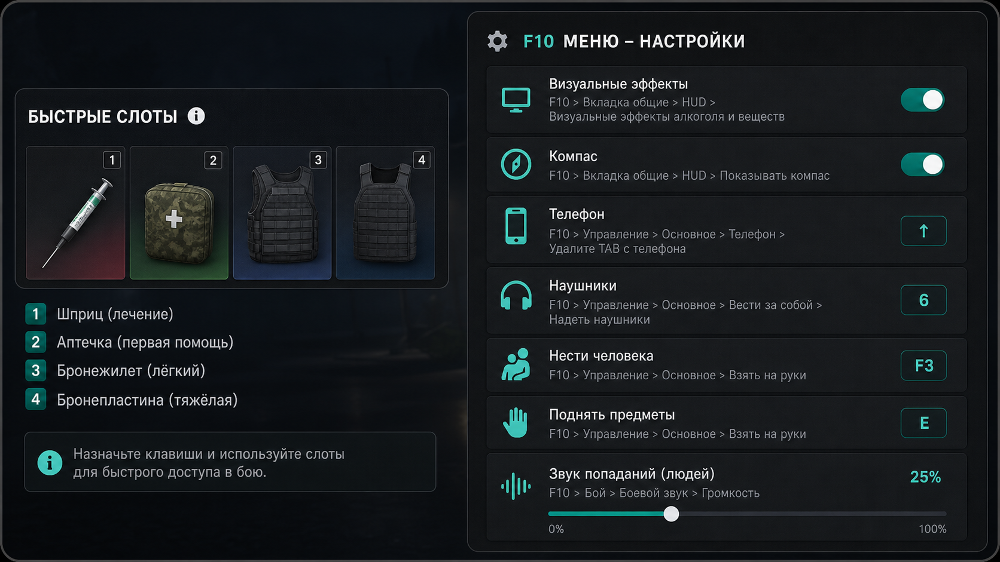

⚡
Текущий статус
Смена не начата
Выберите пост и нажмите «Заступить»
Сервер
Арбат Основной регламентПанель военнослужащего
Выберите пост и заступите на смену. Помощник подготовит сообщения для рации, покажет порядок действий и напомнит о следующем докладе.
Выберите город
Правила, посты и доклады зависят от выбранного сервера. Сейчас полностью доступен Арбат.
Выберите пост и нажмите «Заступить»
Эфирная дисциплина
Быстрый эфир
Выберите ситуацию, проверьте готовую фразу и скопируйте её в рацию.
Конструктор
Основные сигналы
Код 4 вправе объявить Комбриг, Полковник или МО. После объявления все покидают посты, а время засчитывается полностью. Нужны скрин заступления и скрин объявления Кода 4.
Служебная связь
Больше FPS · меньше задержек
Пошаговая памятка по редуксу, `Settings.xml`, удобным биндам, анимациям и настройкам F10.
Производительность
Редукс заменяет текстуры и помогает улучшить производительность или графику. Для оптимизации нужен пакет, который уменьшает визуальный шум и нагрузку на ПК.

Графика
В `Settings.xml` находятся дополнительные настройки игры. Правильные значения дают заметную оптимизацию.

Управление
Чем быстрее нажимаются нужные кнопки, тем выше шанс правильно отреагировать во время игры.

Перед заменой файлов создайте резервную копию. Используйте только проверенные архивы и настройки, разрешённые правилами проекта.
Персонализация
Оформление и звук сохраняются только на этом устройстве.
Внешний вид
Уведомления
Учётная карточка
Закрытый раздел
Доступ к разделу выдаёт создатель сайта. Материалы предназначены только для одобренных аккаунтов.
Фиксируйте выполненные задачи, повышения и премии. Соблюдайте правила сервера и условия командования.
Используйте разрешённые сервером работы в свободное от службы время. Проверяйте актуальные ограничения Арбата.
Сравнивайте доход за час и выбирайте безопасные способы без нарушения правил проекта.
Только создатель